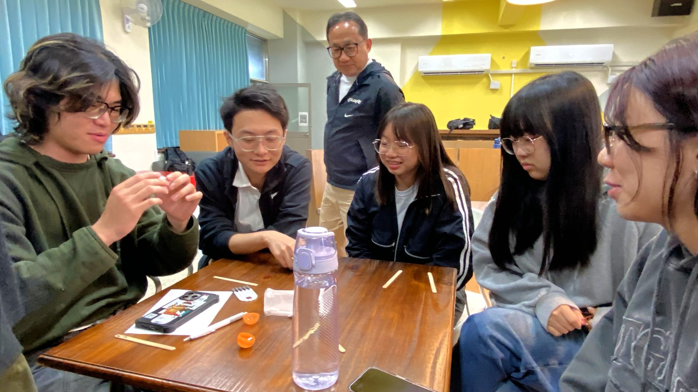

完整學期課程｜16 週
- ・以決策設計四階段為主軸，由鄉育負責課程設計、業師授課與學習評量，搭配系上教師共同備課與評分，可作為選修課程、特色課程或跨域課程開設。
- ・課程同步累積學生 Decision Log，並於期末提供課程成果與決策分析報告。
For Universities
與大學攜手，將真實職場情境與決策設計（Decision Design） 帶進課堂，幫助青年學習專業的同時，也開始練習如何理解問題、判讀資訊、溝通協作，並將所學運用於更多生活與職場情境。
尋路計畫（Pathfinder Program）結合決策實戰、企業案例、跨域講師、企業參訪，建立一條從專業學習到實際運用的學習路徑。
Formats・課程導入方式
Outcomes・學生成效與教師回饋
每位學生於課程前後完成能力評估，並結合 Decision Log、課堂互動觀察、學生作品與反思分析，交叉檢視學生在決策能力、自我探索、資訊判讀、溝通協作與職涯準備上的成長歷程。
課程成果將整理為合作學校專屬成果報告，提供量化評估、質性分析與課程成果回饋，作為課程優化、教學設計與後續研究合作的重要依據。
Research・方法的研究基礎
決策設計（Decision Design）整合社會情緒學習、決策科學、體驗式學習與職涯發展研究，並透過教學現場、企業合作與研究合作持續驗證與優化。
理解自己，建立良好決策的基礎。
理解人如何判斷與做出選擇，包含認知偏誤與資訊判斷。
能力並非來自知識傳遞，而是在經驗、反思與再次實踐的循環中建立。
整合職涯準備度與職涯適應力研究，培養面向未來工作的準備。

與大學攜手，將真實職場情境與決策設計（Decision Design） 帶進課堂。